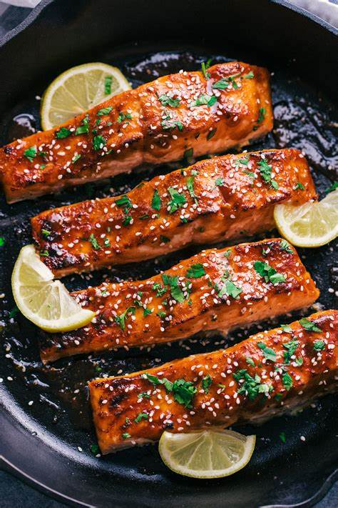

Maple Glazed Salmon

Description
Here is an image of delicious cooked mapled glazed salmon.
Salmon is a versatile and healthy fish
Ingredients
- Maple Syrup: Of course, you'll need maple syrup!
- Soy sauce: Salty soy sauce perfectly balances the sweetness of the maple syrup.
- Garlic: Fresh garlic adds bold flavor.
- Salmon: This recipe works best with a pound of salmon, which should make about four regular-sized filters.